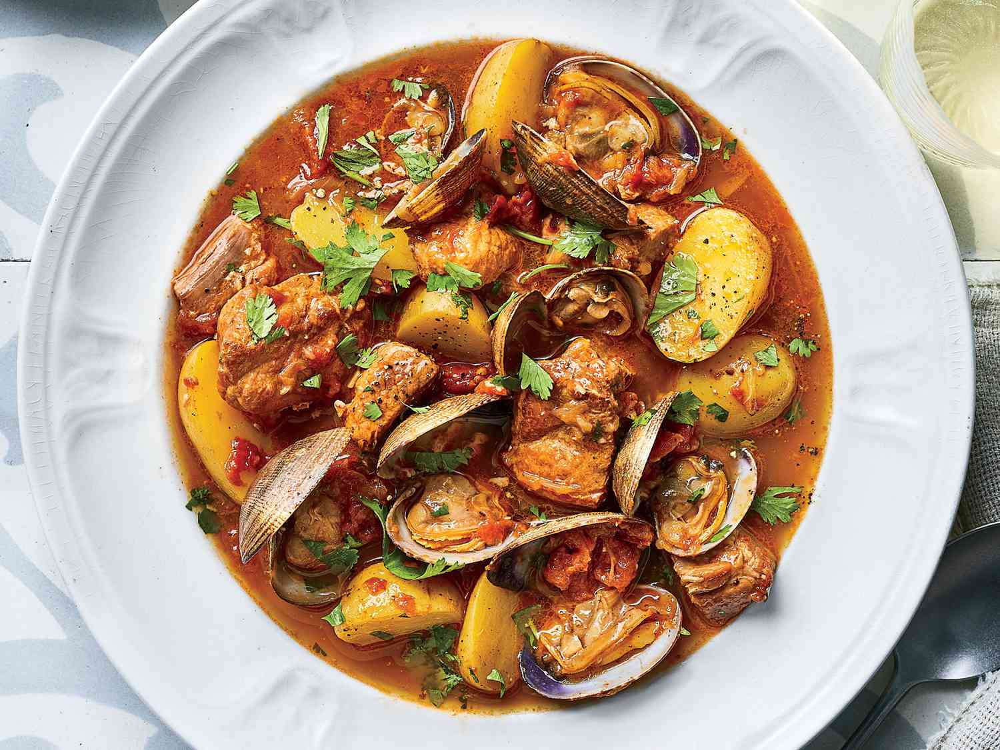
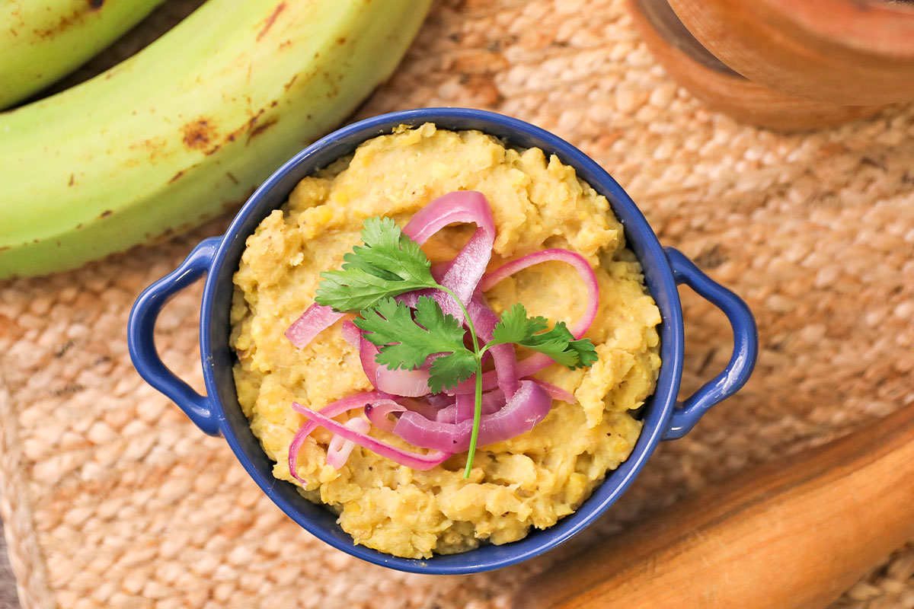

A classic Portuguese dish; putting a modern twist on a traditional favorite.

Atelejana is a traditional Portuguese dish that has been enjoyed for generations. It is known for its rich flavors and hearty ingredients, making it a favorite among locals and visitors alike.
The dish typically consists of a combination of fresh vegetables, tender meats, and aromatic spices, all cooked to perfection.
| Element | Quantity | Process |
|---|---|---|
| Boneless pork shoulder | 2-3 lbs | Cut into 1-inch cubes |
| Little neck clams | 1 lb | Cleaned thoroughly |
| Yukon gold potatoes | 2 lbs | Peel and dice into small cubes. |
| White onions | 1 medium | Finely chopped |
| Garlic | 5 cloves | Minced or crushed |
| Olive oil | 3 tbsp | For sautéing |
| White wine | 1 cup | For sutéing & deglazing the pan |
| Spices & herbs | 2-3 bay leaves, 1 tbsp paprika and massa de pimentão, fresh cilantro/parsley | For simmering the dish |
Note: The ingredients can be adjusted based on personal preferences and availability.
Ethan's favorite traditional Dominican dish
Mangu is a traditional Dominican dish made from mashed green plantains,
often served with a variety of toppings and sides.
Ethan's favorite part is the salami.

| Ingredients | Price |
|---|---|
| Green plantains | $3.00 |
| Water | Free |
| Salt | $0.25 |
| Butter or oil | $1.50 |
| Red onions | $0.75 |
| Fried cheese | $2.50 |
| Salami | $2.00 |
| Eggs | $1.80 |